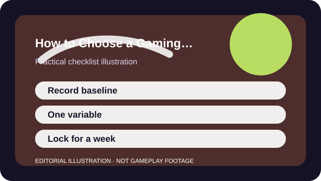

QUICK ANSWER
The short version
Start with your current setting, change one variable at a time, and keep the winner long enough to judge it in normal play.
Sensitivity advice becomes generic fast because desk space, stick tension, FOV, game speed, and posture all change what "comfortable" actually means. A copied pro number is only useful if the context around it matches yours.
The practical goal is not to find a famous setting. It is to find one that lets you make the same turn twice without panic-correcting, overshooting, or tensing your hand every few minutes.

CHECKLIST
What to confirm before you change anything
- Write down your current DPI, in-game sensitivity, ADS settings, and response-curve options before touching anything.
- Measure whether your mouse space or controller grip is actually comfortable enough to support a lower or higher setting.
- Pick one repeatable drill, route, or training target instead of testing in random matches only.
- Decide whether the real problem is turning speed, micro-adjustments, scope control, or general tension.
- Turn off unrelated experiments so you are not changing multiple input variables at once.
This prep stops you from blaming a map, a mood swing, or a bad lobby for what is really a repeatable control issue.
SCENARIO
When every fight feels either too twitchy or too floaty
A common pattern is raising sensitivity because 180-degree turns feel slow, then discovering that micro-corrections become shaky and scopes feel worse. The answer is not another giant jump. It is isolating which action truly failed and whether positioning could have solved part of it.
Testing a small range around your baseline in the same environment makes the real problem visible. Often the issue is not raw sensitivity at all; it is poor crosshair starting position, bad anticipation, or too little physical space for the style you want to play.
PROCESS
A repeatable way to work through it
Define the failure in plain language
Use phrases like 'I over-flick close targets' or 'I cannot finish a 180 without lifting too often.' That creates a testable problem instead of a vague feeling.
Move in small controlled steps
Adjust one sensitivity variable at a time in a narrow range. Huge jumps feel dramatic but usually hide whether the setting really helped.
Test hip-fire and scoped control separately
If a game exposes separate sliders, diagnose each one with a specific task. A good hip-fire setting can still pair badly with scoped multipliers.
Lock the winner for several sessions
A setting needs time under ordinary pressure. If you reset it after one bad game, you learn nothing about whether consistency is improving.
Keep short notes for a week: what changed, what improved, and what still felt wrong. That record becomes more useful than your memory the next time a new patch or device tempts you to start over.
COMMON MISTAKES
What usually makes the problem worse
Changing settings after every loss
Match outcomes contain too many variables to diagnose a sensitivity by themselves. Look for repeated control symptoms across comparable tasks.
Changing DPI, in-game sens, and ADS together
When three numbers move at once, you cannot tell which part actually helped or hurt.
Ignoring physical setup
A smaller mouse pad, thumbstick wear, or awkward arm position can make a perfectly reasonable setting feel wrong.
SUCCESS CRITERIA
How to know the change actually worked
- You can repeat your most common turn or tracking movement without a large correction.
- Scope or ADS control feels related to the base setting instead of like a separate fight.
- You stop wanting to change the number after every uneven night.
- Your hands and shoulders stay calmer because the setting fits your space and reach.
A good sensitivity fades into the background. You still miss sometimes, but the misses are understandable and you stop treating the settings menu as emergency therapy.
SOURCES AND LIMITS
Where to verify live details
- No single cm-per-360 or stick value works for every game, device, or posture.
- Aim assist, FOV, scope multipliers, and input acceleration vary by game.
- Persistent pain, numbness, or strain is a health issue, not a settings puzzle.
Menu names, defaults, and device behavior can change after updates. Use the linked official support surfaces for the current live details and keep this guide for the process around them.